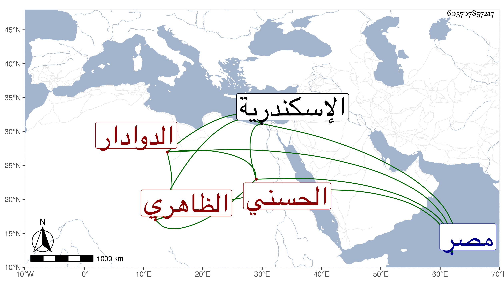

0902Sakhawi.DawLamic.ITO20230111-ara1.EIS1600.605707857217
Biography ID: 605707857217
40
طوغان الحسني الظاهري برقوق الدوادار وكان يعرف بالمجنون . ممن رقاه الناصر ابنه حتى عمله مقدما ثم دوادارا كبيرا وباشرها بحرمة وعظمة إلى أن خامر مع جماعة كان الناصر قدمهم أمامه إلى البلاد الشامية جاليسا وانتموا لشيخ ونوروز واستقر به شيخ حين نظاميته في الدوادارية فلما تسلطن استمر به فيها وتزايدت عظمته جدا ثم ركب هو ومماليك على السلطان وانتظر من كان تواعد معه فلم يجئه أحد فاختفى ثم وجد بمصر القديمة فحمل إلى القلعة ثم أرسل به إلى اسكندرية فسجن فيها حتى قتل في المحرم سنة ثمان عشرة وخلف أموالا جمة ، وكان شجاعا مقداما أهوج مسرفا على نفسه متجاهرا مع ظلم وعسف ، وقال العيني أنه كان جميل الصورة طويلا عريضا محتشما يراعي العلماء ويعتقدهم متعصبا مع من يلوذ به ، ولكنه كان مشتغلا بالشرب والمغاني أيام الناصر ثم قصر عن ذلك فصار يسمع من العلوم ويجالس العلماء ، وهو والد الناصري محمد الآتي وصاحب المدرسة برأس حارة برجوان من الشارع وبها ضريح وسبيل والربع والدار المجاورين لبيت البلقيني من حارة بهاء الدين .
